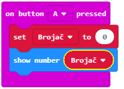
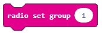

Projektni zadatak - Žica¶
Problemi s motorikom (spora reakcija ili nespretnost obavljanja neke aktivnosti) susreću se gotovo svakodnevno. Puno poslova sadašnjih zahtijeva mirnu ruku. Na primjer, arhitekti, zavarivači, stomatolozi i kirurzi moraju imati “mirnu” ruku kako bi njihov rad bio što uspješniji. Poseban je problem s motorikom u ruci koja nije dominantna.
Istraživanja pokazuju da u svijetu 96% ljudi koristi desnu ruku. Kod većine ovih ljudi lijeva je ruka potpuno zanemarena i s njom se može učiniti vrlo malo preciznih radnji.
Jedan od načina za prevladati ovoj problem je korištenje žičanog uređaja kako bi se pomoglo osobi da vježba svoje motoričke sposobnosti dobivanjem povratnih informacija s uređaja o uspjehu zadatka. S ovim uređajem svatko može vježbati koncentraciju i motoričke sposobnosti. Ovisno o povratnim informacijama, korisnik može utvrditi je li vješt ili ima problema s motorikom pa mora više vježbati.
Za izradu žičanog uređaja trebate:
4 Micro:bita
krokodilke
žice različitih duljina
drvena podloga ili stiropor
zvučnik ili slušalice
kuka
Da bismo stvorili Žicu, prvo moramo napraviti fizički uređaj koji se sastoji od žice na kojoj ćemo vježbati svoju motoriku, drvene (ili druge) podloge i Micro:bit-ove.

Postupak spajanja Micro:bitova
Sada kada smo upoznati s osnovnim komponentama i značajkama Micro:bit-a, možemo nastaviti s izgradnjom Žica uređaja. Sada moramo spojiti Micro:bit-ove na konstrukciju pomoću krokodilki. Prvi Micro:bit spajamo spajanjem tla (GND) s žicom pomoću krokodilki. Slika ispod prikazuje vezu između uzemljenja i Micro:bit-a (samo za jedan uređaj).

Osim toga, morate spojiti Micro:bit na dio uređaja koji provjerava morotike (kuka). Sada kada smo napravili Žica uređaj moramo napraviti programe za svaki Micro:bit.

Programiranje
Potrebno je zasebno programirati sva četiri Micro:bit-a: 1. Jedan ima ulogu otkrivanja i brojanja pogrešaka koje korisnik pravi 2. Drugi se koristi za pokretanje vremena kroz njega 3. Treći mjeri vrijeme 4. Četvrti se koristi za reprodukciju zvuka kada korisnik pogriješiti.
Korak 1
Idite na https://makecode.microbit.org/.
Korak 2
Kreirajte novi projekt.
Sada želimo programirati otkrivanje pogreške, točnije, želimo se registrirati s Micro:bit-om kad kuka dodirne glavnu žicu.
Na temelju uređaja fizičke žice, možemo zaključiti da je pin P0 “okidač” svih događaja.
Kako je pin P0 vezan pomoću krokodilki za kukicu dodirom glavne žice pojavljuje se pogreška i na Micro:bit-u se treba pojaviti križić (programiramo detekciju pogreške).
Korak 3
Izaberite iz kategorije  blok
blok  i iz padajućeg izbornika izaberite pin
i iz padajućeg izbornika izaberite pin P0.
Ovaj blok bit će naš “okidač” za prikaz vizualne pogreške.
Korak 4
Sada je potrebno dodati blok za prikaz križeva na zaslonu koji će se pojaviti kada korisnik dodirne glavnu žicu kukom.
Odaberite kategoriju  i blok
i blok  .
.
Izgled koda i simulator pogreške:

U kod ćemo dodati blok pauze kako bismo osigurali pravovremeni odgovor sustava (Žica uređaj).
Odaberite kategoriju i blok  u kojem postavljate vrijeme u milisekundama (1000 milisekundi = 1 sekunda).
u kojem postavljate vrijeme u milisekundama (1000 milisekundi = 1 sekunda).
Izgled koda:
Korak 5
Gornji dio koda prikazuje otkrivanje pogreške koje se događa samo kada kuka dodirne glavnu žicu.
Sada ćemo dodati odjeljak za brojanje koliko je puta korisnik pogriješio. Da bi se ovaj zahtjev ispunio, trebamo pronaći način za pohranu i, ako je potrebno, promijeniti vrijednost brojača pogrešaka koji korisnik pravi. Rješenje ovog problema je uvođenje varijable.
Varijablu možete zamisliti kao prostor u memoriji računala, sličan kutiji u kojoj su, tijekom izvođenja programa, pohranjene neke vrijednosti. Varijable imaju svoja imena. Kad želite koristiti vrijednost varijable u programu, dovoljno je navesti njegovo ime.
Da biste stvorili varijablu, u kategoriji Varijable (1) kliknite gumb Make a variable (2) i u polje unesite naziv varijable (3), u našem slučaju Brojač. Klikom na gumb OK (4) stvara se varijabla (5).

Korak 6
Na početku “zadatka”, vrijednost brojača bit će nula. Postavljanje početne vrijednosti (resetiranje na početnu vrijednost) bit će definirano pritiskom na tipku korisnika A. To znači da kad korisnik pritisne tipku A na Micro:bit-u, vrijednost brojača postavljena je na nulu i moguće je pokrenuti brojanje pogrešaka.
Izaberite iz kategorije blok , i iz padajućeg izbornika izaberete tipku.
Ovaj blok bit će naš pokretač za resetiranje Brojača.
Iz kategorije Varijable povucite blok  .
.
Spajamo ovaj blok s gornjim blokom i blokom za prikaz varijable vrijednosti. Iz kategorije biramo blok  u koji povlačimo blok
u koji povlačimo blok  iz kategorije
iz kategorije Variables, na mjesto broja 0.
Dobijamo blok koji prikazuje vrijednost varijable Brojač.
Dio koda za resetiranje i prikazivanje varijable Brojač:
Korak 7
Varijabla Counter, čiju smo početnu vrijednost postavili na nulu, sada bi je trebali koristiti tako da se njegova vrijednost mijenja (povećava za jedan) svaki put kad korisnik napravi pogrešku, točnije kada kuka dodirne glavnu žicu.
Za to ćemo upotrijebiti blok  iz kategorije
iz kategorije Varijable.
Povući ćemo ovaj blok na dio koda u kojem smo otkrili pogrešku prikazujući znak x.
Izgled koda i izvršavanje koda na simulatoru:

Korak 8
U sljedećem koraku želimo poboljšati projekt stvarajući zvuk svaki put kada korisnik dodirne glavnu žicu.
Za to moramo uspostaviti vezu između dva Micro:bit-a, točnije, kako bismo iskoristili mogućnost radio komunikacije između njih. Prvo moramo stvoriti grupni ID koji se koristi za “stvaranje” prostora u kojem će u našem slučaju komunicirati dva Micro:bit-a. Za kreiranje ID grupe koristimo blok  iz kategorije  . Može se unijeti bilo koji broj. Ostavit ćemo taj ID grupe 1. Ovaj blok smjestimo unutar bloka iz kategorije .
. Može se unijeti bilo koji broj. Ostavit ćemo taj ID grupe 1. Ovaj blok smjestimo unutar bloka iz kategorije .
Dio koda koji stvara komunikacijsku skupinu:

Da bi se radio signal poslao na drugi uređaj koji će na to “reagirati” tako da se zvuk čuje nakon što je napravljena pogreška, u dio koda mora se umetnuti blok za otkrivanje i brojanje pogrešaka.
Ažurirani kod za otkrivanje i brojanje pogrešaka:

Cijeli kod za prvi Micro:bit:

Klikom na tipku ili tipku preuzmite .hex datoteku na vaše računalo. Povlačenjem datoteke na Micro:bit on je spreman za rad.
{kind=link}
Korak 9
Sljedeći je korak stvaranje programa za drugi Micro:bit koji će kontrolirati zvuk svaki put kada korisnik pogriješi. Naša dva Micro:bit-a moraju komunicirati u prostoru s ID-om grupe 1.
Postavljamo blok iz kategorije u blok iz kategorije .
Dio koda koji stvara komunikacijsku skupinu:
Sljedeći korak je da ovaj Micro:bit primi informaciju (u našem slučaju broj) na osnovu koje će „reagirati“ tako što će se čuti zvuk. Za to ćemo iz kategorije povući blok:

U njega ćemo uvući blok  iz kategorije
iz kategorije  pomoću kojeg se reproducira zvuk.
U određenom bloku s padajućih popisa biramo ton i duljinu iste.
pomoću kojeg se reproducira zvuk.
U određenom bloku s padajućih popisa biramo ton i duljinu iste.

Izgled koda za reprodukciju zvuka:

Napomena: Da bi se audio mogao reproducirati Micro:bit mora biti spojen na zvučnike ili slušalice kako slijedi:

Potpuni Micro:bit kod aktiviran zvukom:

Na ovaj smo način stvorili otkrivanje, brojanje i oglašavanje pogreške koju korisnik napravi kad dodirne glavnu žicu.
Korak 10
Da bismo stvorili uređaj koji mjeri količinu vremena kada korisnik završi s “vježbanjem” svojih motoričkih sposobnosti, moramo uvesti još dva Micro:bit-a, od kojih će jedan biti samo “okidač” za pokretanje vremena na drugom Micro:bit-u.
Klikom na (tipku) A resetira se uređaj i briše se zaslon. Opcija reset nalazi se u kategoriji Advanced - Control.
Opcija brisanja zaslona nalazi se u podkategoriji More kategorije .
Dio koda:

Zatim stvaramo prostor za komunikaciju s ID-om 50:

Pin P1 je pin za koju se kroz krokodilke zakači kukica.
Taj će se pin koristiti kao “okidač” vremena. Preciznije, dodirom kuke na žici šalje se vremenski aktivirani radio signal. U isto vrijeme, korisnik bi vidio da je vrijeme počelo mjeriti na Micro:bit ekranu pojavljuje se slika .
Čitav kod za Micro:bit koji signalizira početak vremena.

Korak 11
Moramo definirati dvije varijable:
varijablu Vrijeme za koje se mjeri vrijeme od početka “igre”. Igra započinje primanjem signala iz prethodnog Micro:bit-a.
varijabla Brojač koja ima dvije moguće vrijednosti true i false – dotaknuta je žica ili ne.
Klikom na (tipka) A resetira se uređaj i postavlja početne vrijednosti varijable Vrijeme i Brojač.
Vrijednosti za varijablu Brojač mogu se naći u kategoriji  :
:

Sljedeći je korak stvaranje prostora za komunikaciju s ID grupom 50:
Pin P1 je pin za koju se kroz krokodilke zakači kukica. Taj će se pin koristiti kao vremenski “okidač”:
Kad korisnik klikne tipku B, prikazuje se vrijeme koje mu je potrebno da završi “trening”:

Kad Micro:bit prihvati radio signal (broj) iz drugog Micro:bit-a, započinje postupak mjerenja vremena i mijenja vrijednost varijable Vrijeme za 1, nakon svake sekunde dok se “trening” ne prekine:

Cijeli kod za Micro:bit koji mjeri vrijeme od kada je započela “igra”:

Kad se svi kodovi prebace na Micro:bit-ove, možemo “testirati” svoje motoričke sposobnosti i “trenirati” slabiju ruku.